PSFEx es una herramienta de software especializado en el procesamiento de imagenes astronómicas que crea modelos de funciones de dispersión de punto (PSF) a partir de imagenes previamente procesadas por SExtractor. [9][10]

Instalación de PSFEx
El proceso de instalación de PSFEx puede hacerse desde el código fuente de la siguiente manera:
- Clonación del repositorio
$ git clone https://github.com/astromatic/psfex.git
$ cd psfex- Configurar con autotools:
$ ./autogen.sh
$./configure- Compilar e instalar:
$ make
$ make install¿Cómo trabaja PSFEx?
-
Punto de partida: "Vignettes"
PSFEx no trabaja con la imagen completa, trabaja únicamente con los recortes que SExtractor extrajo al rededor de cada fuente (VIGNET). Cada vignette es una pequeña imagen centrada aproximadamente en el centroide de la fuente, con el fondo ya sustraído por SExtractor.
Esto es muy importante: PSFEx no vuelve a tocar la imagen original, todo el trabajo que realiza ocurre sobre los recortes, por ello, antes de usar esta herramienta, se debe tener un catálogo lo suficientemente bueno. [9][10] -
Selección de la muestra de entrenamiento
PSFEx decide cuáles de las vignettes corresponden realmente a estrellas puntuales, esto lo hace mediante el algoritmo deSAMPLE_AUTOSELECT: [9][10]- Construye un histograma de FWHM vs. magnitud de todas las fuentes.
- Busca la "moda"- el pico de densidad donde se concentran los objetos puntuales (las estrellas forman una línea vertical de FWHM constante en ese diagrama, mientras las galaxias se dispersan hacia FWHM mayores).
- Aplica los filtros que se configuran en el archivo principal (
SAMPLE_FWHMRANGE,SAMPLE_VARIABILITY,etc.) alrededor de la moda para obtener una muestra "limpia".
-
Normalización y remuestreo de cada estrella
Cada vignette que fue aceptada pasa por un preprocesamiento:-
Recentrado (
PSF_RECENTER): PSFEx re-estima el centroide de cada estrella con más precisión que el centroide inicial de SExtractor, típicamente ajustando un perfil analítico o usando momentos de la imagen, y desplaza la vignette para que quede perfectamente centrada en el píxel central. - Normalización de flujo: el flujo de cada estrella se normaliza para que sean comparables entre sí.
-
Remuestreo según
PSF_SAMPLING:si el modelo de PSF se va a construir a una resolución distinta de la imagen original, cada vignette se interpola a esa nueva grilla
-
Recentrado (
-
Construcción de la base del modelo
En esta etapa entraBASIS_TYPE, PSFEx necesita representar la forma del PSF con algún conjunto de funciones base:-
Si
BASIS_TYPE=PIXELoPIXEL_AUTO: cada píxel del modelo se trata como un parámetro libre independiente. Es decir, la "base" son literalmente funciones delta en cada posición del píxel del stamp del modelo. -
Si
BASIS_TYPE= GAUSS_LAGUERRE: en vez de píxeles independientes, usa un conjunto de funciones anal+iticas ortogonales, esto regulariza naturalmente el modelo, dando resultados más suaves con menos estrellas. -
BASIS_NUMBERcontrola cuántos elementos de esa base se usan.
-
Si
-
El ajuste usando mínimos cuadrados con variabilidad espacial
PSFEx no ajusta un PSF por estrella y luego promedia, ajusta un modelo global que depende simultáneamente de:- La posición del píxel dentro del stamp del PSF (u,v)
- La posición de la estrella en el campo de la imagen (X,Y)
PSFVAR_DEGREES: $$a_k(X,Y)=\sum_{i,j}c_{kij}\cdot X^iY^j$$ PSFEx resuelve todos estos coeficientes $c_{kij}$ simultáneamente planteando un sistema de mínimos cuadrados gigante: para cada estrella de la muestra (con su posición X,Y conocida y su vignette observada), la predicción del modelo debe acercarse lo más posible al valor observado en cada píxel, sumando el error de todas las estrellas y todos los píxeles a la vez. -
Iteración
El ajuste que hace PSFEx se hace de manera iterativa:- Ajusta el modelo con toda la muestra actual.
- Calcula el $\chi^2$ de cada estrella individual contra el modelo recién ajustado.
- Rechaza las estrellas con $\chi^2$ anormalmente alto.
- Vuelve a ajustar con la muestra depurada.
-
Salida final
El resultado de todo el proceso no es una imagen, es una tabla de coeficientes $c_{kij}$ guardada en formato FITS, contiene:- Los coeficientes de la base
- Los coeficientes polinomiales de variación espacial
- Metadatos de normalización

FLUX_RADIUS) vs. magnitud (imagen tomada de [9])

FLUX_RADIUS vs. magnitud MAG_AUTO obtenido a partir del catálogo generado por SExtractor
En la figura 18 podemos observar una similitud con el diagrama mostrado en la documentación de PSFEx. Las estrellas puntuales forman una secuencia estrecha con valores casi constantes de FLUX_RADIUS, lo que se conoce como locus estelar. PSFEx identifica automáticamente esta región para seleccionar las estrellas que serán utilizadas en la construcción del modelo del PSF. Los objetos con radios mayores corresponden principalmente a galaxias u otras fuentes extendidas.
Requisitos de entrada y parámetros de configuración clave
Esta herramienta no funciona directamente con imagenes como SExtractor, sino sobre catálogo que SExtractor genera, estos deben contener pequeñas subimágenes (VIGNET) para cada detección, además, estos catálogos deben estar en formato binario FITS_LDAC.[9][10]
Los parámetros que se deben configurar que son más importantes son los sigueintes:
| Parámetro | Por defecto | Objetivo |
|---|---|---|
PSF_SIZE |
25,25 | Dimensiones de los modelos PSF en píxeles |
PSF_SAMPLING |
0.0 | Paso de muestreo de los modelos PSF (0=automático) |
BASIS_TYPE |
BASIS_AUTO |
Vectores base para PSF (PIXEL,GAUSS_LAGUERRE,etc.) |
PSFVAR_KEYS |
X_IMAGE, Y_IMAGE |
La PSF depende de estos parámetros |
PSFVAR_GROUPS |
1,1 | Grupo polinómico para cada parámetro |
PSFVAR_DEGREES |
2 | Grado polinómico (0=PSF constante) |
SAMPLE_AUTOSELECT |
Y | Selección automática de fuentes puntuales |
SAMPLE_FWHMRANGE |
2.0,10.0 | Rango de FWHM de la fuente (píxeles) |
SAMPLE_MINSN |
20.0 | Relación señal/ruido mínima de la fuente |
CHECKIMAGE_TYPE |
Múltiple | Tipos de imágenes de chequeo a generar |
CHECKPLOT_TYPE |
Múltiple | Tipos de parcelas de control para generar |
WRITE_XML |
Y | Generar resumen XML |